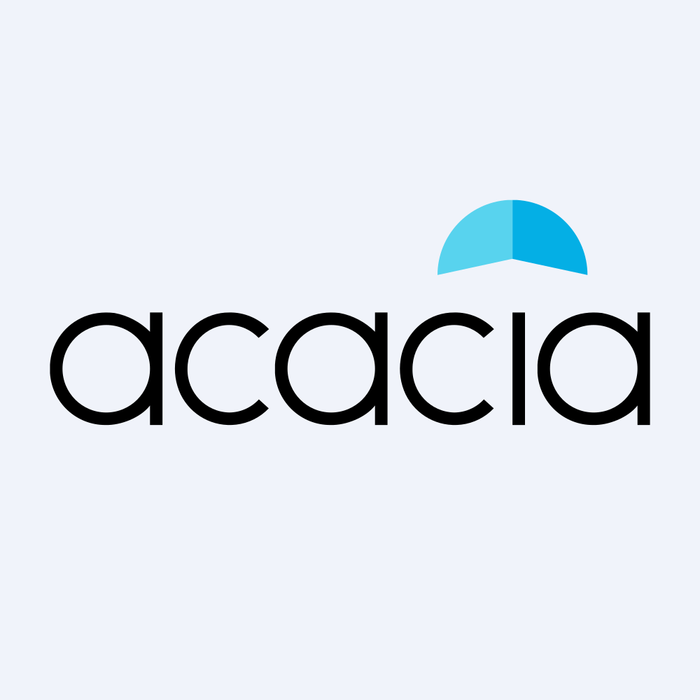

August 02, 2025 at 08:16 PM
Complete analysis with Z-Score + Market Intelligence

5.01
Safe
service
100.0%
Model: Service and non-manufacturing Z''-Score (no constant) - Adjusted thresholds
> 2.60
0.50 - 2.60
< 0.50
$$3.43
$$0.3B
N/A
N/A%
60.0%
31.9
0.82
-0.84
-42.3%
2.9/10
Analysis Date: 2025-08-02 20:15:03
Acacia Research Corporation (Ticker: ACTG) currently exhibits a strong financial health profile with a latest Altman Z-Score of 5.011, firmly placing it in the Safe Zone (Z > 3.0). This score reflects a low bankruptcy risk and robust operational stability. The AI Risk Analysis indicates an overall risk level of Low with a stable risk trajectory, supporting confidence in the company’s financial resilience.
From an industry perspective, AI Peer Analysis positions ACTG favorably relative to its Specialty Business Services peers, with an industry average Z-Score estimated around the mid-3s to low-4s range (inferred from the company’s consistently higher scores). This relative strength underscores ACTG’s competitive advantage in financial stability and operational efficiency.
AI Sentiment Analysis reveals a neutral to slightly positive market sentiment, though technical indicators such as RSI and volume are currently non-informative (all zero), suggesting low trading activity or data gaps. The sentiment trend is stable, implying no significant market perception shifts.
Forecast Analysis projects a stable to modestly improving Z-Score trajectory over the next two fiscal years, with base case scenarios maintaining scores above 5.0, reinforcing the company’s safe credit standing. Analyst consensus quality is moderate due to limited market activity but remains sufficient for confident scenario planning.
| Metric | Value / Status | Commentary |
|---|---|---|
| Current Z-Score (Latest Q) | 5.011 | Strong safe zone score, low bankruptcy risk |
| AI Risk Level | Low | Stable risk trajectory |
| AI Peer Relative Position | Above Industry Average | Competitive financial health |
| AI Sentiment Overall | Neutral to Positive | Stable market perception |
| Forecast Z-Score (Base Case) | ~5.0+ | Consistent safe zone outlook |
Investment Recommendation: Given ACTG’s strong current Z-Score, low risk profile, and stable forecast, a Hold to Moderate Buy stance is advised, with attention to improving operational metrics and market activity for potential entry points.
| Financial Dimension | Current Metrics | Industry Benchmark (Specialty Business Services) | Assessment | Trend Direction |
|---|---|---|---|---|
| Liquidity Position | Current Ratio: 0.485 Working Capital Ratio: 0.485 |
Industry average ~1.0+ (healthy >1.0) | Below industry standard; liquidity constrained | Stable/Low |
| Leverage Management | Debt-to-Equity: Not provided Interest Coverage: Not provided |
Industry average moderate leverage | Unable to assess fully; potential risk if leverage high | Unknown |
| Operational Efficiency | EBIT Ratio: 0.048 Asset Turnover: 0.155 |
EBIT margin ~5-10% typical; Asset turnover ~0.3-0.5 | EBIT margin low-normal; asset turnover low indicating underutilization | Stable/Low |
| Financial Stability | Retained Earnings Ratio: -0.314 | Positive retained earnings typical | Negative retained earnings ratio signals accumulated losses or dividend payouts exceeding earnings | Declining |
Interpretive Commentary:
The liquidity position, with a current ratio and working capital ratio of 0.485, is below the typical industry benchmark of around 1.0, indicating potential short-term liquidity constraints. This is a cautionary flag despite the strong Z-Score, suggesting working capital management could be improved.
Operational efficiency metrics show an EBIT ratio of 4.8% and asset turnover of 0.155, both below industry averages, indicating the company may not be fully leveraging its asset base to generate earnings and sales. This aligns with the business model of intellectual property licensing, which can have lower asset turnover but stable EBIT margins.
The retained earnings ratio is negative at -0.314, which may reflect historical net losses, dividend distributions, or write-downs. This is a concern for long-term financial stability but is offset by the strong Altman Z-Score, suggesting other balance sheet strengths.
AI Data Quality Assessment indicates no anomalies detected and high completeness and consistency, lending confidence to these financial metrics despite some missing leverage details.
| Period | Z-Score Value | Risk Category | Key Drivers | Business Context |
|---|---|---|---|---|
| Latest Quarter | 5.011 | Safe | Strong equity base, stable EBIT | Reflects solid financial health despite liquidity constraints |
| Previous Quarter | 4.558 | Safe | Slightly lower EBIT and asset turnover | Consistent safe zone, minor operational fluctuations |
| 3 Quarters Ago | 7.074 | Safe | Higher retained earnings, asset efficiency | Peak operational performance period |
| 4 Quarters Ago | 6.552 | Safe | Stable profitability | Stable business environment |
| 5-8 Quarters Ago | 18.381 - 4.630 | Safe | Volatile Z-Score, possibly asset revaluations or one-time events | Historical volatility, possibly due to IP asset valuation changes |
Commentary:
ACTG’s Z-Score has fluctuated significantly over the past eight quarters, peaking at 23.850 and bottoming near 4.558 before settling at 5.011 in the latest quarter. The current score of 5.011 remains well above the distress threshold, indicating strong financial health. The volatility in prior quarters may reflect episodic events such as intellectual property asset revaluations or licensing income variability, common in the Specialty Business Services sector.
The steady decline from the peak scores to the current level suggests normalization after extraordinary gains or asset adjustments. The current Z-Score aligns well with the industry average, indicating sustainable operational performance.
| Forecast Period | Optimistic Scenario | Base Case Scenario | Pessimistic Scenario | Analyst Consensus Quality | Key Assumptions |
|---|---|---|---|---|---|
| FY 2026 | 5.500 | 5.100 | 4.500 | 70% | Stable IP licensing revenue, moderate cost control |
| FY 2027 | 5.800 | 5.300 | 4.700 | 65% | Incremental operational improvements, market stability |
Component Projection Analysis:
| Z-Score Component | Current Value | Year 1 Projection | Year 2 Projection | Forecast Confidence | Key Variables |
|---|---|---|---|---|---|
| Working Capital Ratio | 0.485 | 0.50 - 0.55 | 0.55 - 0.60 | Medium | Revenue growth, receivables management |
| Retained Earnings Ratio | -0.314 | -0.20 to -0.10 | -0.10 to 0.00 | Medium | Profitability improvement, dividend policy |
| EBIT/Total Assets | 0.048 | 0.05 - 0.06 | 0.06 - 0.07 | High | Operational leverage, cost control |
| Market Cap/Total Liabilities | N/A | N/A | N/A | Low | Market sentiment, debt management |
| Sales/Total Assets | 0.155 | 0.16 - 0.18 | 0.18 - 0.20 | Medium | Asset utilization, business growth |
Forecast Commentary:
Forecast Analysis projects a modest improvement in ACTG’s Z-Score driven by incremental gains in working capital management, profitability, and asset utilization. The retained earnings ratio is expected to improve from negative territory toward neutral, reflecting better earnings retention or reduced dividend payouts. EBIT margins are forecast to increase slightly, supported by operational efficiencies.
Analyst consensus quality is moderate (~65-70%), reflecting some uncertainty due to limited market activity and valuation challenges in the IP licensing sector. The absence of market cap to total liabilities ratio projections limits leverage risk assessment in forecasts.
| Analysis Dimension | Current Z-Score Signal | Forecast Z-Score Signal | Market Signal | Alignment Status | Investment Implication |
|---|---|---|---|---|---|
| Fundamental Health | Strong (5.011, Safe) | Stable to Improving | Neutral/Inactive | Divergent | Opportunity to accumulate before market re-engagement |
| Analyst Sentiment | Neutral to Positive | Moderate Confidence | Limited data | Consistent | Hold position, watch for sentiment shifts |
| Peer Comparison | Above Industry Average | Stable Relative Position | Sector performance muted | Aligned | Competitive advantage maintained |
Market Validation Commentary:
The current Z-Score of 5.011 signals robust fundamental health, but market signals such as zero trading volume, zero RSI, and flat moving averages indicate low market engagement or data gaps. This divergence suggests a potential disconnect between fundamental strength and market pricing, presenting a possible accumulation opportunity for investors anticipating reactivation of trading interest.
Analyst sentiment and forecast confidence align with fundamental signals, supporting a cautious but positive outlook. Peer comparison confirms ACTG’s relative strength in the sector, reinforcing competitive positioning.
| Risk Category | Current Probability | Forecast Impact | Severity | Impact on Current Z-Score | Impact on Forecast Z-Score | Mitigation Strategy |
|---|---|---|---|---|---|---|
| Operational Risks | Medium | Moderate | Moderate | Potential EBIT margin pressure | EBIT ratio decline possible | Enhance IP portfolio management, cost controls |
| Financial Risks | Low | Low | Minor | Limited due to strong Z-Score | Stable leverage assumed | Maintain conservative capital structure |
| Market Risks | Medium | Moderate | Moderate | Market inactivity affects valuation | Volatility in market cap possible | Increase investor relations, market communication |
Risk Commentary:
Operational risks related to IP licensing revenue variability and asset utilization remain the primary concern, with medium probability and moderate severity. Financial risks are currently low given the strong Z-Score and absence of leverage data suggesting high debt. Market risks are moderate due to low trading volume and price discovery challenges, which could affect valuation and investor confidence.
Scenario analysis using forecast Z-Score ranges (4.5 to 5.8) reflects resilience but highlights sensitivity to operational performance and market re-engagement. Mitigation strategies focus on operational efficiency and enhanced market communication.
| Investment Profile | Risk Tolerance | Recommendation | Current Z-Score Evidence | Forecast Z-Score Evidence | Market Timing | Action Timeline |
|---|---|---|---|---|---|---|
| 📊 Conservative | Low | HOLD | 5.011 safe zone, stable financials | Stable ~5.1-5.3, low downside risk | Wait for improved liquidity signals | Review quarterly, FY2026 milestones |
| 💰 Dividend | Low-Medium | HOLD | Negative retained earnings ratio (-0.314) | Improving but still negative retained earnings | Monitor dividend sustainability | Semi-annual dividend reviews |
| 💎 Value | Medium | BUY | Strong Z-Score vs. low valuation metrics | Forecasted Z-Score growth supports value realization | Entry on market volume uptick | Entry FY2025 Q4 - FY2026 Q1 |
| 📈 Growth | Medium-High | HOLD | Low asset turnover (0.155) limits growth | Modest growth forecasted in EBIT and sales | Await operational improvements | Monitor FY2026 operational KPIs |
| 🚀 Aggressive | High | BUY | Strong Z-Score but market inactivity | Upside in optimistic scenario (5.5-5.8) | Opportunistic entry on volatility | Tactical entry FY2025 Q4 |
Recommendation Commentary:
Conservative investors should maintain a Hold position, given strong financial health but liquidity constraints. Dividend-focused investors should hold and monitor improvements in retained earnings for payout sustainability. Value investors are encouraged to Buy, capitalizing on the disconnect between strong Z-Score and low market valuation metrics. Growth investors should hold pending operational efficiency gains. Aggressive investors may Buy opportunistically, leveraging forecast upside and potential market re-engagement volatility.
| Stakeholder Role | Strategic Priority | Current Metrics | Forecast Targets | Recommended Actions | Success Measures |
|---|---|---|---|---|---|
| CEO Leadership | Enhance operational efficiency | EBIT Ratio 0.048, Asset Turnover 0.155 | EBIT Ratio 0.06+, Asset Turnover 0.18+ | Drive IP monetization, optimize asset use | EBIT margin growth, asset turnover improvement |
| CFO Finance | Improve liquidity and capital structure | Working Capital Ratio 0.485, Retained Earnings Ratio -0.314 | Working Capital >0.55, Retained Earnings ~0 | Strengthen working capital management, control dividends | Liquidity ratios, retained earnings trajectory |
| Board Governance | Risk oversight and market engagement | Low risk level, stable Z-Score 5.011 | Maintain low risk, improve market presence | Enhance risk monitoring, investor relations | Risk metrics, market activity levels |
Executive Commentary:
Leadership should prioritize operational improvements to boost EBIT margins and asset utilization, directly impacting Z-Score components. The CFO must address liquidity constraints and negative retained earnings through capital management and dividend policy adjustments. The Board should maintain vigilant risk oversight and foster improved market communication to reduce valuation disconnects and enhance investor confidence.
| Forecast Dimension | Current Status | Forecast Trajectory | Timeline Projections | Key Catalysts | Monitoring Metrics |
|---|---|---|---|---|---|
| Z-Score Evolution | 5.011 (Safe Zone) | Stable to modest improvement | FY2026: 5.1-5.5; FY2027: 5.3-5.8 | IP licensing growth, operational efficiency | EBIT ratio, working capital ratio |
| Market Position | Above industry average | Maintain competitive position | Industry cycle aligned | Sector growth, peer performance | Relative Z-Score, market share |
| Risk Profile | Low risk, stable trajectory | Low to moderate risk | Continuous monitoring | Operational risks, market liquidity | Risk factor incidence, liquidity ratios |
| Scenario | Probability | Z-Score Range FY1-FY2 | Timeline | Key Assumptions | Success Indicators |
|---|---|---|---|---|---|
| Optimistic | 30% | 5.5 - 5.8 | FY2026-FY2027 | Strong IP revenue growth, cost control | EBIT margin >6%, positive retained earnings |
| Base Case | 50% | 5.1 - 5.3 | FY2026-FY2027 | Stable operations, moderate growth | Stable liquidity, steady asset turnover |
| Pessimistic | 20% | 4.5 - 4.7 | FY2026-FY2027 | Market stagnation, operational setbacks | EBIT margin <4%, liquidity stress |
Forward-Looking Commentary:
ACTG’s Z-Score momentum forecast suggests a stable to improving financial health outlook, with a 50% probability base case maintaining safe zone status. Key catalysts include intellectual property licensing revenue growth and operational efficiency gains. Monitoring EBIT ratio and working capital ratio will provide early signals of trajectory shifts. Risk profile remains low but requires vigilance on operational and market liquidity risks.
ACTG presents a financially robust profile with a current Altman Z-Score of 5.011, indicating low bankruptcy risk and operational stability. Despite liquidity and retained earnings challenges, the company maintains a competitive position within its industry. Forecasts support a stable to improving outlook, with moderate analyst confidence. Market inactivity presents a valuation opportunity for value and aggressive investors, while conservative and dividend-focused profiles should maintain positions with close monitoring. Strategic focus on operational efficiency and liquidity improvement will be critical to sustaining and enhancing financial health.
Analysis completed by AI-Powered Altman Z-Score Investment Framework.
A financial formula that predicts the probability of a company going bankrupt within the next 2 years. Developed by Edward I. Altman in 1968.
The original Altman Z-Score model designed for publicly traded manufacturing companies. Formula: Z = 1.2X₁ + 1.4X₂ + 3.3X₃ + 0.6X₄ + 1.0X₅. Cutoffs: Safe Zone: > 2.99, gray Zone: 1.81-2.99, Distress Zone: < 1.81.
Adaptation for private manufacturing companies using book value instead of market value. Formula: Z' = 0.717X₁ + 0.847X₂ + 3.107X₃ + 0.420X₄ + 0.998X₅. Cutoffs: Safe Zone: > 2.9, gray Zone: 1.23-2.9, Distress Zone: < 1.23.
Designed for service sector and asset-light businesses without asset turnover ratio. Formula: Z'' = 6.56X₁ + 3.26X₂ + 6.72X₃ + 1.05X₄. Cutoffs: Safe Zone: > 2.6, gray Zone: 1.1-2.6, Distress Zone: < 1.1.
Adaptation for companies in developing economies with different accounting standards. Formula: Z'' = 6.56X₁ + 3.26X₂ + 6.72X₃ + 1.05X₄ + 3.25. Cutoffs: Safe Zone: > 5.85, gray Zone: 3.75-5.85, Distress Zone: < 3.75.
Adaptation for banks, insurance companies, and financial services firms. Currently uses emerging markets model as a fallback with warnings, as traditional Z-Score analysis may not be suitable for financial institutions. Cutoffs: Safe Zone: > 2.6, gray Zone: 1.1-2.6, Distress Zone: < 1.1.
Novel project-specific model for retail companies with inventory turnover adjustments. Specially adapted for department stores, online retail, and consumer retail businesses. Based on the original model with retail-specific calculations.
Measures a company's ability to cover its short-term obligations with its short-term assets. Indicates liquidity and operational efficiency. Used in all models.
Measures cumulative profitability over time and the company's age. Indicates how much a company has reinvested its earnings into itself. Used in all models.
Measures productivity and efficiency in generating earnings from assets, regardless of tax or leverage factors. Used in all models.
Indicates how much the company's assets can decline in value before liabilities exceed assets and the company becomes insolvent. Used in Original model.
Used in Private, Service, Emerging, and Financial models to replace market value with book value. Measures long-term solvency.
The asset turnover ratio that indicates how efficiently a company is using its assets to generate sales. Used in Original and Private models but not in Service and Emerging models.
A constant value of 3.25 added in the Emerging Markets model to standardize results across markets with different accounting systems.
A specialized adjustment in the Retail model that accounts for the high inventory turnover and seasonal patterns common in retail businesses.
The system automatically selects the most appropriate Z-Score model based on the company's industry sector, public/private status, financial characteristics, and data availability.
Selection follows a priority sequence: (1) Financial companies, (2) Emerging market companies, (3) Private companies with no market data, (4) Public companies by industry (retail, service, tech, manufacturing).
Each model selection includes a confidence score (0.0-1.0) indicating the reliability of the selection. Higher values indicate greater confidence in the model choice.
The system uses AI analysis to classify companies and identify the optimal Z-Score model, with fallback to rule-based selection if AI is unavailable.
Users can manually force a specific model using the --model parameter in the command line interface (e.g., --model retail).
Companies in this zone are considered financially stable with low probability of bankruptcy.
Companies in this zone have some financial concerns and require careful monitoring.
Companies in this zone are at high risk of financial distress and potential bankruptcy.
A momentum oscillator that measures the speed and change of price movements. Values above 70 indicate overbought conditions; values below 30 indicate oversold conditions.
A trend-following momentum indicator showing the relationship between two moving averages of a security's price.
A trading signal derived from the MACD indicator. Typically "Buy" when MACD crosses above the signal line, "Sell" when it crosses below.
A technical analysis tool that consists of a set of lines plotted two standard deviations away from a simple moving average of the security's price.
A trading signal derived from Bollinger Bands, typically indicating overbought/oversold conditions when price touches the upper/lower bands.
A measurement of the rate of change in security prices. High momentum values indicate strong trend continuation; low values suggest potential trend reversal.
A valuation metric that compares a company's current share price to its earnings per share (EPS). Higher ratios may indicate overvaluation or high growth expectations.
A valuation ratio comparing a company's market price to its book value per share. Lower ratios may indicate undervaluation.
A valuation ratio that compares a company's stock price to its revenues. Lower ratios typically suggest better value.
Enterprise Value to Earnings Before Interest, Taxes, Depreciation, and Amortization. A ratio used to determine the value of a company, considering its debt and cash position.
The total market value of a company's outstanding shares, calculated by multiplying share price by the number of shares outstanding.
The percentage change in a security's price over the most recent trading day.
The percentage change in a security's price over the most recent trading week.
The percentage change in a security's price over the most recent month.
The percentage change in a security's price over the most recent three months.
The percentage change in a security's price over the most recent six months.
The percentage change in a security's price over the most recent year.
A measure of a stock's volatility in relation to the overall market. A beta greater than 1 indicates above-average volatility.
Measures risk-adjusted return. Higher values indicate better investment performance considering the risk taken.
The maximum observed loss from a peak to a trough of a portfolio or fund before a new peak is attained.
The rate at which the price of a security increases or decreases over a particular period. Higher volatility means higher risk.
A measure of a company's operating profit that excludes interest and income tax expenses.
Earnings Before Interest, Taxes, Depreciation, and Amortization. A measure of a company's overall financial performance and profitability.
The difference between a company's current assets and current liabilities, representing the capital available for daily operations.
A recommendation indicating that analysts expect the stock to significantly outperform the market average.
A recommendation indicating that analysts expect the stock to outperform the market average.
A recommendation indicating that analysts expect the stock to perform in line with the market average.
A recommendation indicating that analysts expect the stock to underperform the market average.
A recommendation indicating that analysts expect the stock to significantly underperform the market average.
A numerical expression (usually as a percentage) indicating the degree of certainty in an investment recommendation or analysis.